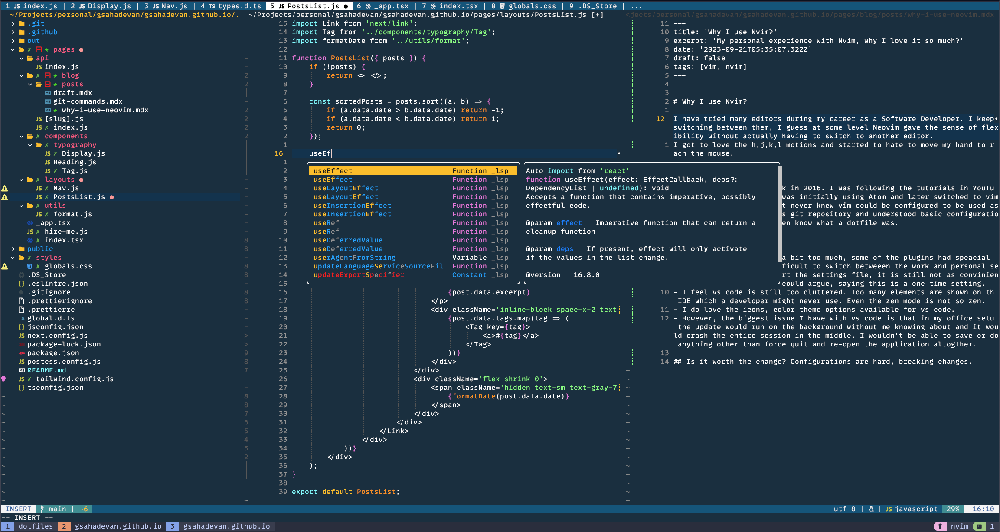

Why I use Nvim?
I have tried many editors during my career as a Software Developer. I keep switching between them, I guess at some level Neovim gave the sense of flexibility without actually having to switch to another editor. I got to love the h,j,k,l motions and started to hate to move my hand to reach the mouse.

Finding the true love
I was learning React, back in 2016. I was following the tutorials in YouTube, link here. The author was initially using Atom and later switched to vim. I knew what vim was, but never knew vim could be configured to be used as an editor. I followed his git repository and understood basic configurations. Back then I didn't even know what a dotfile was.
Customizing VS Code
I had customized vs code a bit too much, some of the plugins had speacial configs. I did find it difficult to switch betweeen the work and personal settings. Though I could port the settings file, it is still not as convinient as using dotfiles. One could argue, saying this is a one time setting.
- I feel vs code is still too cluttered. Too many elements are shown on the IDE which a developer might never use. Even the zen mode is not so zen.
- I do love the icons, color theme options available for vs code.
- However, the biggest issue I have with vs code is that in my office setup the update would run on the background without me knowing about and it would crash the entire session in the middle. I wouldn't be able to save or do anything other than force quit and re-open the application altogther.